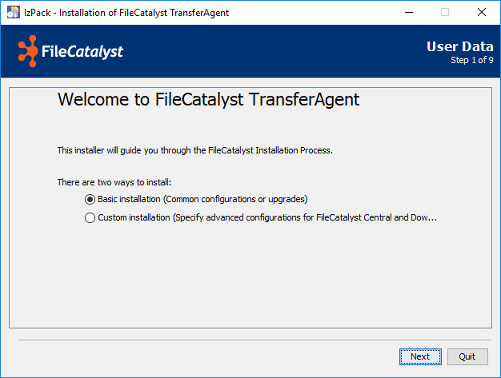
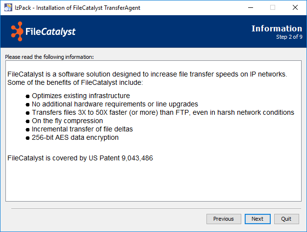
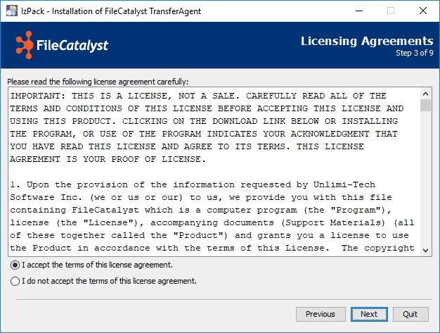
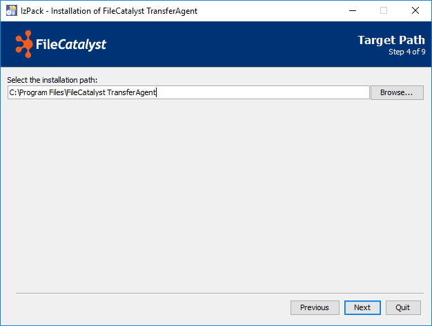
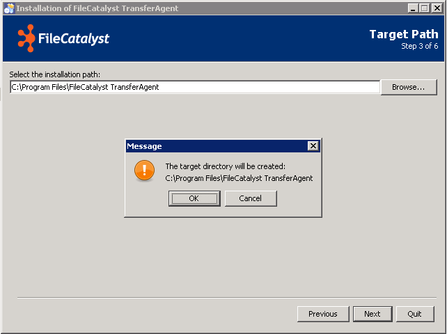
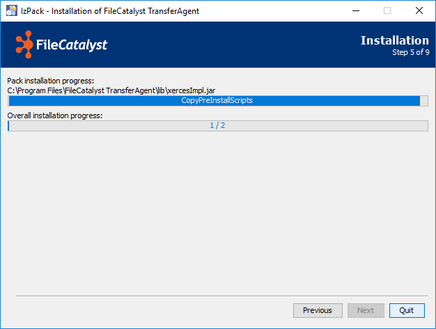
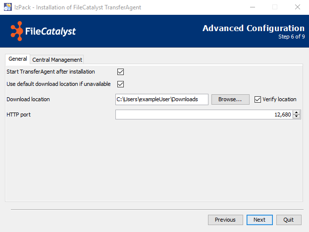
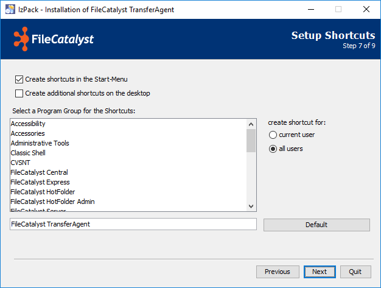
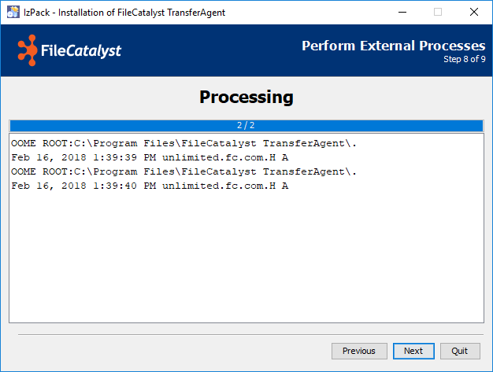
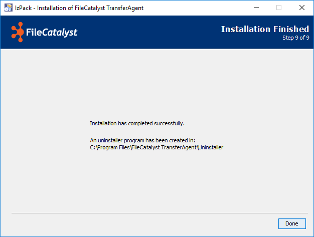

System Requirements
On the end user side, FileCatalyst TransferAgent was designed to run on a multitude of operating systems and hardware configurations. Below are the minimum requirements:
- Dual Core processor, 2GB RAM, 80MB of free disk space
- Windows 7 or higher, MacOS 10.7 (Lion) or higher
- Recent web browser: IE 10+, Safari (MacOS only), Chrome, Firefox
- Java 8 (Java 1.8) or newer
- Broadband Internet connection
- Network connectivity to FileCatalyst Direct Server (third party FTP servers are not supported)
Download the Installer
The organization hosting the FileCatalyst-enabled file transfer page will provide a link to a version of FileCatalyst TransferAgent, typically but not always from the same dialog used to access this guide.
Once the browser has completed downloading the installer, it will usually ask if you would like to run it. If not, you must go to your download location and execute the file "installer_fc_transferagent.exe".
Installer Wizard
Introduction
You will be shown the first screen of the installer. This will introduce you to the installer for the TransferAgent, as well as the different ways to install the TransferAgent. The available ways of installation are as follows:
- Basic installation: This installation mode is for individuals that don't require custom configurations for their installations. By selecting this mode, TransferAgent will install with the default configurations that satisfy most use cases.
- Custom installation: This installation mode is for individuals that may require special configurations for their installations. By selecting this mode, TransferAgent will present an optional panel that allows for custom configurations to be supplied.

Information
This will gives some information about our products. If you are ready to install, click on the next button.

License
In order to proceed you must accept the terms of the license.

Location
After agreeing to our license and clicking next, you will be given the opportunity to set the install location.

If this location does not exist, you will be asked for permission to create it, otherwise you will be warned that some of your existing files may be overwritten.

Install Files to Hard Drive
Continuing will install the files on your hard drive.

Advanced Configurations

If the Custom Installation mode was specified during the installation process, an area for specifying configurations will be presented. In this area, you may specify configurations for both General, and Central Management configurations. The configurations that can be modified are as follows
-
General:
- Start TransferAgent after installation: If selected, the TransferAgent will start after the installation is finished.
- Use default download location if unavailable: If selected, the TransferAgent will migrate the download location to the default location if it cannot be accessed or does not exist.
- Download Location: Where the TransferAgent will download files to.
- HTTP Port: The port that will be used when TransferAgent launches it's internal web server.
-
Central Management:
- Enable Remote Monitoring: Allow TransferAgent to share statistics with and be controlled by FileCatalyst Central. Enabling this option will also recommended installing FileCatalyst TransferAgent as a system service.
- Address: The address (IP or hostname) of FileCatalyst Central.
- Port: The port at which FileCatalyst Central is found.
- Username: The username needed to log into FileCatalyst Central and register TransferAgent for monitoring.
- Password: The password needed to log into FileCatalyst Central and register TransferAgent for monitoring.
- Alias: A name of your (or your administrator's) choosing, which will allow FileCatalyst Central administrators to easily identify your TransferAgent.
- TransferAgent IP: The IP or domain name of this instance of the FileCatalyst TransferAgent. Use of domain name names is recommended.
Shortcuts
The next step is the creation of short cuts.

Launch TransferAgent
The last step launches the TransferAgent.

Finalize Installation
After creating short cuts, you have finished installing your application. Our installer informs you of the location of the uninstaller and is ready to exit.

Upgrading the TransferAgent Application
Upgrading FileCatalyst TransferAgent requires a sequence of steps be taken based on the installation platform. Some steps are optional (to safeguard configuration data in case of a rollback), but should be followed to ensure the smoothest upgrade experience.
- Stop the TransferAgent.
If you are running FileCatalyst TransferAgent stand-alone (from "Start" menu), please right-click on the tray icon and select the bottom menu item.
If you are running the TransferAgent as a service, please open up the Windows Services and stop the process from running (default name is "FileCatalyst TransferAgent"). - Backup configuration files.
If upgrading from v3.6 or less, you should copy the following configuration files into an "upgrade" folder.- fcta.conf
- origins.json
If upgrading from v3.7 or greater, you should also copy the following configuration files into an "upgrade" folder.- sites.json
- tawrapper.conf
- www/express-src/js/config.js
- Run the installer (install_fc_transferagent.exe).
- Terminate the TransferAgent instance that started during the installer.
- Copy back all of the files that you moved during step 2
- Restart the FileCatalyst TransferAgent application (either as a service or standalone).
Uninstalling the FileCatalyst TransferAgent Application
Uninstall Steps
- If you are running FileCatalyst TransferAgent stand-alone, find the TransferAgent tray icon, right-click, and select the "Exit FileCatalyst TransferAgent" option at the bottom of the menu options.
- If you are running TransferAgent as a service, click on 'Start', search for services.msc, and then run that application
- Find the TransferAgent service and stop it
- Open ‘Control Panel’, navigate to ‘Programs and Features’ and locate FileCatalyst TransferAgent. Click 'uninstall’ and check the box 'Force deletion...' when prompted